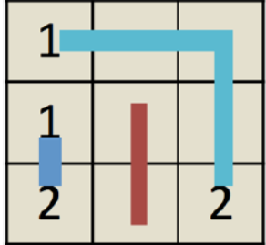
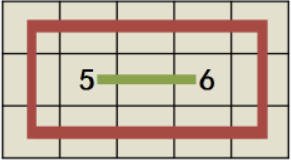

HDU5520. Number Link
内存限制：12000/6000 MS (Java/Others) 时间限制：65536/65536 K (Java/Others)
题目描述
Number Link is a famous game available in platforms including iOS and Android. Given a board with $n$ rows and $m$ columns, the target of the game is to connect pairs of grids with the same numbers. Once two numbers are paired, the path connecting them will occupy the corresponding grids. The path can only go vertically or horizontally. Note that, no two paths could intersect (by sharing the same grid) in any grid. In this problem, you are going to play a modified version, called Number Link ++. See the picture below for an example.

In this new game, you can use two types of paths. Type I is to connect two number grids with different parities (i.e., connect odd number with any other even number). It might be hard to cover the entire grid with only type I path, so we allow type II path, which is a circle path covers only the empty grids (the only special case of type II path is a path only connecting two adjacent empty grids; see the figure above). Since there is no free lunch, we have no free path either. When goes from grid $(a,b)$ to an adjacent grid $(c,d)$, you have to pay for a certain amount of tolls. The cost is the same when goes back from $(c,d)$ to $(a,b)$. Usually the cost of a path is the sum of tolls you paid by traveling along the grids on this path. The only exception is for the special case of type II path. In that case, you have to pay twice the cost (since it is a circle).
The total cost of the game is the sum of costs for all the paths. Can you help me figure out the paths so that each grid is on exactly one path? If there exists such solution, what is the minimum possible cost?
In this new game, you can use two types of paths. Type I is to connect two number grids with different parities (i.e., connect odd number with any other even number). It might be hard to cover the entire grid with only type I path, so we allow type II path, which is a circle path covers only the empty grids (the only special case of type II path is a path only connecting two adjacent empty grids; see the figure above). Since there is no free lunch, we have no free path either. When goes from grid $(a,b)$ to an adjacent grid $(c,d)$, you have to pay for a certain amount of tolls. The cost is the same when goes back from $(c,d)$ to $(a,b)$. Usually the cost of a path is the sum of tolls you paid by traveling along the grids on this path. The only exception is for the special case of type II path. In that case, you have to pay twice the cost (since it is a circle).
The total cost of the game is the sum of costs for all the paths. Can you help me figure out the paths so that each grid is on exactly one path? If there exists such solution, what is the minimum possible cost?
输入格式
The first line of input consists of an integer $T$, which is the number of test cases.
Each case begins with two integers, $n$ and $m$, in a line $( 1 \le n, m \le 50)$.
The next $n$ lines describe the board. Each line consists of $m$ nonnegative numbers, which describe the status of each column from left to right. If the number is zero, then the grid is empty; otherwise it indicates the number on the corresponding grid.
The next $n-1$ lines each have $m$ nonnegative numbers, which describe the cost of vertical connection. The $j$-th number in $i$-th line is the cost when travels from grid $(i,j)$ to $(i+1,j)$.
The next $n$ lines each have $m-1$ nonnegative numbers, which describe the cost of horizontal connection. The $j$-th number in $i$-th line is the cost for a path to go from grid $(i,j)$ to $(i,j + 1)$.
All the numbers, including the answer, can be represented using $3$2-bit signed integer.
Each case begins with two integers, $n$ and $m$, in a line $( 1 \le n, m \le 50)$.
The next $n$ lines describe the board. Each line consists of $m$ nonnegative numbers, which describe the status of each column from left to right. If the number is zero, then the grid is empty; otherwise it indicates the number on the corresponding grid.
The next $n-1$ lines each have $m$ nonnegative numbers, which describe the cost of vertical connection. The $j$-th number in $i$-th line is the cost when travels from grid $(i,j)$ to $(i+1,j)$.
The next $n$ lines each have $m-1$ nonnegative numbers, which describe the cost of horizontal connection. The $j$-th number in $i$-th line is the cost for a path to go from grid $(i,j)$ to $(i,j + 1)$.
All the numbers, including the answer, can be represented using $3$2-bit signed integer.
输出格式
For each test case, first output the case number, then output a single number, which is the minimum cost possible to finish the game. When there is no solution available, simply output -1.
样例
样例输入
3
3 3
1 0 0
1 0 0
2 0 2
1 2 1
2 1 1
3 1
5 6
1 4
1 4
1 1 2 2
1 2 3
3 5
0 0 0 0 0
0 5 0 6 0
0 0 0 0 0
1 1000 1000 1000 1
1 1000 1000 1000 1
1 1 1 1
1000 1 1 1000
1 1 1 1样例输出
Case #1: 10
Case #2: -1
Case #3: 14
Hint
Below are the solutions corresponding to case 1 and case 3 respectively. In case 1, you should double pay the red path, since it is a special case of type II path.
